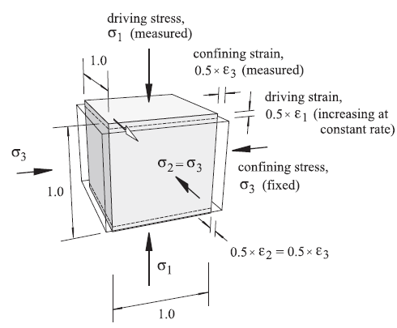
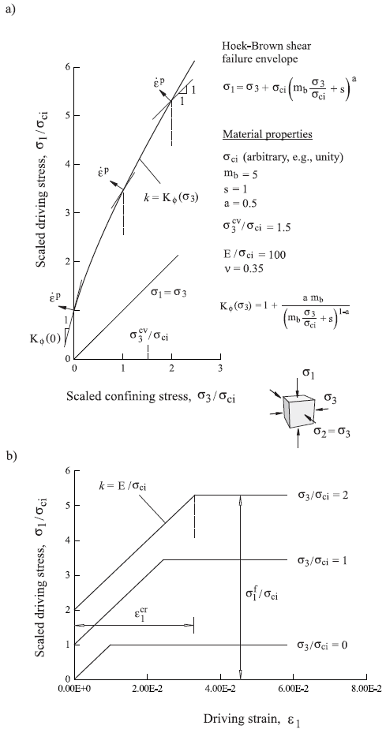
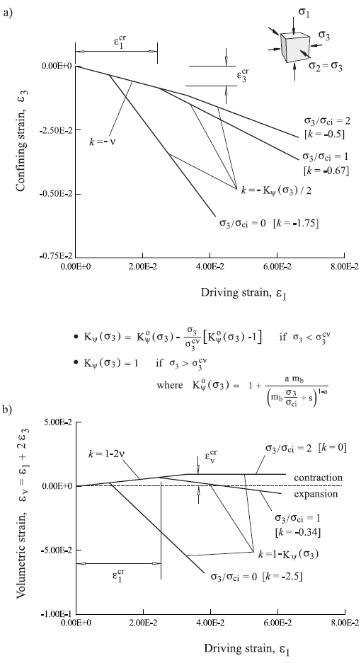
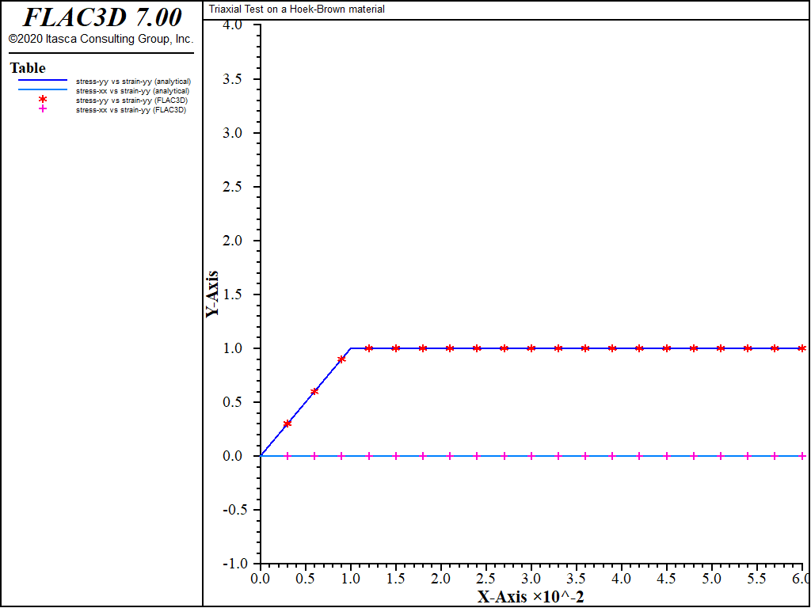
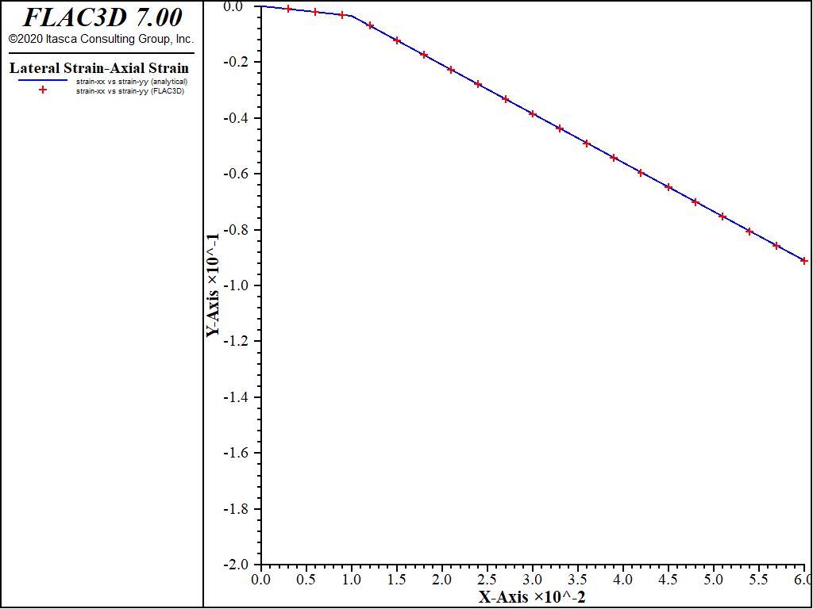
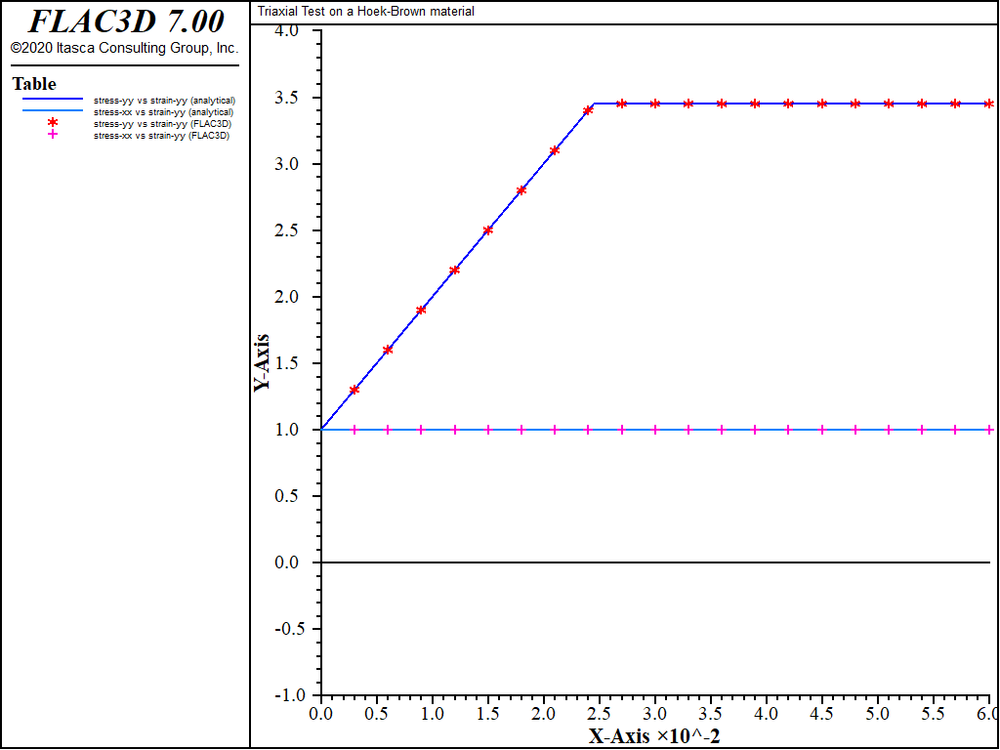
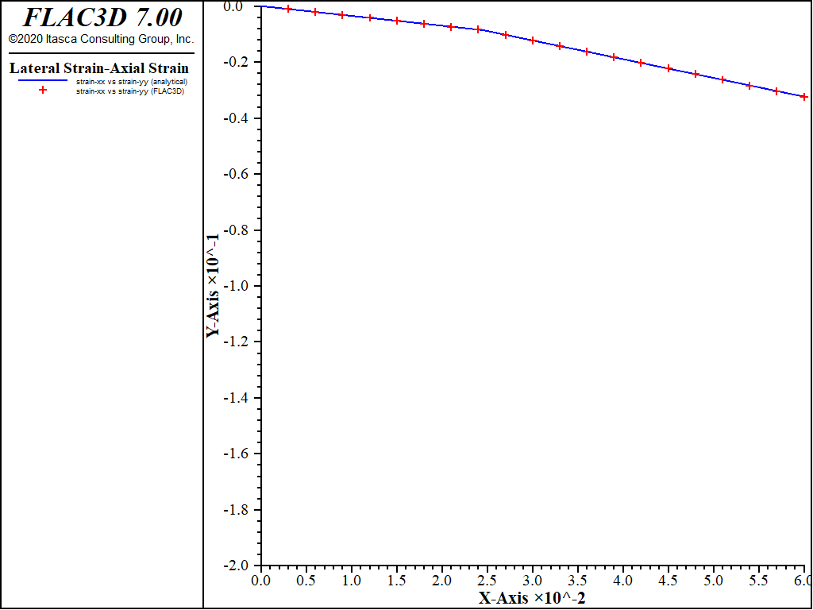

采用 Hoek-Brown-PAC 模型的三轴压缩试验
注意
本示例的项目文件可在 FLAC3D 中查看/运行。[1] 该项目的主数据文件见本示例末尾（main data file）。
对 FLAC3D 中由 Hoek-Brown-PAC 材料（Hoek-Brown-PAC material）构成的模型进行三轴压缩试验，以验证所发展的应力和应变路径。
在 FLAC3D 中建立了模拟三轴加载试验的单网格单元模型。 三轴加载条件示于 图 1（Figure 1）。 压缩加载试验在两种加载条件下进行： \(\sigma_{3}/\sigma_{ci}\) = 0 和 1.0（\(\sigma_{3}\) = 0 和 1.0 MPa）。
三轴试验在具有以下特性的 Hoek-Brown 材料试样上进行：
| \(m_b\) | 5 |
| \(s\) | 0.5 |
| \(\sigma_{ci}\) | 1.0 MPa |
| \(\sigma^{cv}_3\) | 1.5 MPa |
| \(E\) | 100 MPa |
| \(\nu\) | 0.35 |
压缩加载过程中应力和应变的解析解由下图给出， 见图 图 2（Figure 2） 和 图 3（Figure 3）。
FLAC3D 结果与解析解在 图 4（Figure 4）至图 7（Figure 7）中进行了比较。 两者差异在 1% 以内。


图 1：三轴压缩试验——加载条件。


图 2：三轴压缩试验：a) Hoek-Brown 破坏包络线；b) 应力-应变图。


图 3：三轴压缩试验：a) 围压（侧向）应变与轴向应变的关系；b) 体积应变与轴向应变的关系。


图 4：三轴压缩试验——应力与轴向应变的关系（\({\sigma_3}/{\sigma_{ci}}\) = 0）。


图 5：三轴压缩试验——侧向应变与轴向应变的关系（\({\sigma_3}/{\sigma_{ci}}\) = 0）。


图 6：三轴压缩试验——应力与轴向应变的关系（\({\sigma_3}/{\sigma_{ci}}\) = 1.0）。


图 7：三轴压缩试验——侧向应变与轴向应变的关系（\({\sigma_3}/{\sigma_{ci}}\) = 1.0）。
数据文件
TriaxialCompressionHoekBrownPAC.dat
; Hoek–Brown 材料的三轴试验
model new
model large-strain off
fish automatic-create off
model title "Triaxial Test on a Hoek-Brown material"
program call 'input_record'
[input]
zone create brick size 1 1 1
zone cmodel assign hoek-brown-pac
zone property density=1.0 young=[young] poisson=[poiss]
zone property constant-sci=[sig_ci] constant-mb=[mb] ...
constant-s=[s] constant-a=[a]
zone property stress-confining-prescribed=[sig3_cv]
[locptrs]
zone face apply velocity-y [y_vel] range position-y 1
zone face apply velocity-y [-y_vel] range position-y 0
fish history record_variables ;; 1
history interval 1000
fish history eps_xx
fish history eps_yy
fish history eps_yy
fish history sig_xx
fish history sig_yy
fish history sig_zz
model save 'ini'
; 无围压
[global sig_conf = 0.0]
zone face apply stress-xx = [sig_conf]
zone face apply stress-zz = [sig_conf]
zone initialize stress xx = [sig_conf] yy = [sig_conf] zz = [sig_conf]
model step [cyc]
model save 'conf0'
; 有围压
model restore 'ini'
[global sig_conf = -1.0] ; 负值表示压缩
zone face apply stress-xx = [sig_conf]
zone face apply stress-zz = [sig_conf]
zone initialize stress xx = [sig_conf] yy = [sig_conf] zz = [sig_conf]
model step [cyc]
model save 'conf1'
尾注
| [1] | 要在 FLAC3D 中查看该项目，请使用程序菜单。
⮡ FLAC |
| 这些内容对您有帮助吗？… | FLAC3D © 2019, Itasca | 原文更新于 2020 年 10 月 8 日 |